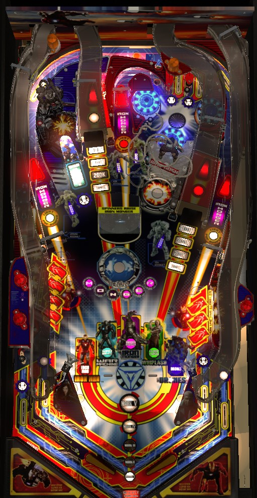

There are 5 main types of progress in the game: complete the Iron Man targets, hit enough Drone targets to light War Machine Multiball, actually play War Machine Multiball, hit the Whiplash targets and magnet enough to play Whiplash Multiball, and shoot orbits then the Monger toy to play Iron Monger Multiball. Do any of these a total of 6 times to light the Jericho min-wizard mode at the center spinner. Do all of these at least once in a single ball to light the Do or Die Hurry-up at the center spinner, worth up to 35,000,000 points. Completing the Iron Man targets 3 times, qualifying War Machine Multiball 4 times, and getting a super jackpot in each of the three multiballs qualifies the Do or Die Multiball wizard mode.
A full plunge goes to the two top lanes, of which one is flashing. A ball through the flashing lane scores 250,000 points the first time, +25,000 for each subsequent skill shot. A short plunge puts the ball in the right orbit, allowing for quicker control of the ball at the cost of the minimal skill shot points. There does not seem to be an award for making the skill shot successfully on every ball of the game, like Spider-Man or Batman: The Dark Knight from around this time.
There are 5 characters to build progress for: Iron Man, War Machine, Iron Monger, Whiplash, and the Drones. Complete their associated feature once to light them in the center of the playfield; master their feature to make them flash. What it means to "master" a feature is mentioned in each character's section. An action that would light any character also awards one Mark. Lit characters are lost at the end of the ball, but flashing characters are kept until the game ends or until Do or Die Multiball wizard mode is played. The exact meaning of Marks and lit vs flashing characters is mentioned in the next section, Wizard Modes.
The four standup targets on the middle-left of the playfield award letters in Iron, and the three similar standup targets on the middle-right spell Man. Hit a flashing target to light it solidly. For the first two completions of Iron Man, hitting an already lit target will spot one of the adjacent targets if they are still flashing. For the 3rd completion of Iron Man onward, or on hard game settings, each target needs to be hit directly. After any completion of the Iron Man targets, hit any target in either bank to receive one Mark, light the Iron Man character, score 250,000 points, and start a scoring mode. Starting all 3 scoring modes over the course of the game will make the Iron Man character flash. Scoring modes are always played in the same order, cycling back to the 1st mode after playing the 3rd.
Progress cannot be made toward Iron Man scoring modes during any multiball. However, it is possible to start a scoring mode, then start a multiball, and the scoring mode will continue to run during that multiball.
There are 4 post targets labelled Drone around the game: one next to the left orbit, one next to the right ramp, and one on either side of the center spinner lane. To start, all 4 Drones are lit. Hitting a Drone scores that Drone and unlights it. A total of 8 lit Drones must be scored to qualify War Machine Multiball. For the first War Machine Multiball, the minimum number of lit Drones at any one time is 3; this decreases to 2 for the second multiball and 1 for the third multiball onwards. If a Drone target is lit, and unlighting it would cause the number of lit Drones to drop below the minimum, then one of the unlit Drones will randomly be lit. Shooting the War Machine kicker itself will also relight one Drone target. For the first multiball, the first Drone target is worth 10,000 points, and subsequent Drones are worth 5,000 more than the least; each successive time multiball is played, the first Drone target will have a base value of 10,000 more points than the previous time. After 8 Drones are successfully scored, shoot the War Machine kicker to score 250,000 points, earn one Mark, and start multiball immediately.
War Machine Multiball starts as a 2-ball multiball, though there are several ways to add more balls; the Shield mystery award will frequently add a ball if there are not already 4 balls on the playfield, and starting another multiball while War Machine Multiball is running will also allow more than 2 balls. Also, when War Machine Multiball begins, a 20-second timer starts. Hitting all 4 Drone targets before the time expires will add one ball to the playfield. You need to hit the Drone targets regardless: each one scores a jackpot worth 475,000 points (+25,000 each subsequent time War Machine MB is played), and hitting all four- no matter how long it takes- moves you to phase 2.
In Phase 2, the 5 major shots- both ramps, both orbits, and the center lane- are lit with red arrows. Shoot a lit shot to score a double jackpot (2x the Drone jackpot value from phase 1) and unlit that shot. After collecting all 5 double jackpots, the War Machine kicker will be lit for super jackpot, equal to the sum of all Drone jackpots and double jackpots- 6,650,000 during the first play of War Machine MB, increasing by 350,000 each subsequent time. After collecting the super jackpot, the multiball rules reset, and you are back to phase 1 with the 4 Drone jackpots.
Starting any War Machine Multiball will light the War Machine character. Collecting a War Machine super jackpot will make the War Machine character flash.
To stack War Machine with other multiballs, you'll want to raise the Iron Monger toy, then start War Machine MB, then start Whiplash Multiball, then start Iron Monger Multiball- in that order.
Trigger any of the game's 3 spinners (the two orbit shots and the center lane) to receive a letter in Monger. (One or more letters may be lit for you at the start of the game.) A spinner must completely stop moving before it can award another letter in Monger. After all 6 letters are spelled, making one more full shot to either orbit or the center lane will briefly trap the ball, allowing the Monger toy to rise up out of the playfield. (On hard settings, you may be required to shoot the center lane for this part; the orbits won't work.)
When the Monger is raised, the goal is to hit it 6 times. Be very careful how you go about this; hitting Monger straight-on will trigger the magnet in front of him, putting the ball wildly out of control and at high risk for a center drain. It is preferable to shoot Monger with glancing blows, aiming for the near left corner from the left flipper and near right corner from the right flipper, to avoid activating the magnet in front of him. While the Monger is up, each hit to him scores 100,000 points, plus an additional 7,500 for each spin registered on any spinner since the last Monger hit. After 6 hits, you are awarded one Mark, and Iron Monger multiball instantly begins.
In multiball, make a full shot to either orbit or the center spinner lane to score 250,000 points and re-raise the Monger. Then, just as before, hit the Monger 6 more times, for another 250,000 points each- these jackpot awards can't be raised. After yet another 6 hits to Monger, he will sink back into the table again, and the center spinner lane will be lit for a 3,000,000 point super jackpot. Collecting this super jackpot resets the whole sequence. Iron Monger jackpot and super jackpot values never increase.
Starting any Iron Monger Multiball will light the Iron Monger character. Collecting an Iron Monger super jackpot will make the Iron Monger character flash.
To stack Iron Monger Multiball with other multiballs, raise the Monger toy first, then start the other multiballs, then come back and start Monger last.
The Whiplash mechanism consists of the two standup targets and magnet positioned between the center spinner lane and the right ramp. Hit either target to score 50,000 points and one shot of credit toward Whiplash multiball. When either target is hit, the magnet is pulsed, which helps send the ball out of control. After 5 hits (for the first Whiplash Multiball) or 10 hits (anytime after that), Whiplash Multiball instantly begins, which comes with the now-standard 250,000 points and one Mark.
Whiplash starts as a 2-ball multiball. Hit any Whiplash target or any of the 5 major shots for a 250,000 point jackpot. Hitting the major shots is usually better, as they keep the ball in control better than the Whiplash target return feed, which still triggers the Whiplash magnet. After 5 standard jackpots, hit the Whiplash target twice- once for a 500,000 point double jackpot, and once for a 1,000,000 point quadruple jackpot. After this, the true phase 2 begins: hit 10 more jackpots at a major shot or the Whiplash targets for 500,000 each, then hit Whiplash one more time for a 3,000,000 point super jackpot. After collecting the super jackpot, the entire sequence resets. Whiplash jackpots can never be raised.
Starting any Whiplash Multiball lights the Whiplash character. Collect a Whiplash super jackpot to make the Whiplash character flash.
To stack Whiplash with other multiballs, be sure the Iron Monger is raised and War Machine Multiball is started first.
The Drone character progress is heavily tied to War Machine Multiball progress. Hitting 8 lit Drone targets to light any single War Machine Multiball causes the Drone character to be lit. Qualifying War Machine Multiball for a fourth time is the only way to make the Drone character flash.
Reaching Mark 6 lights the center spinner lane for Jericho, the game's mini-wizard mode. Marks are awarded any time a multiball is started, an Iron Man scoring round is started, Bogey is started (see below), or a War Machine multiball is lit. Also, completing all 6 rollover lanes (the two top lanes and 4 in/out lanes) will award a Mark, but this can only be done once unless Jericho is played.
Jericho is a single-ball mode that wants you to re-complete 6 of the major objectives in the game. Light all 7 Iron Man targets; light all 6 Shield inserts; hit the Monger 6 times; hit the War Machine kicker 5 times; hit the Whiplash targets 6 times; and hit the two ramps 4 times each. Any shot that makes progress toward any of these scores a mini-jackpot, which starts at 250,000 points and increases by 1,000 with every pop bumper and spinner hit, up to a maximum of 500,000 points. Re-completing the first major objective scores 1,000,000 points; the second scores 2,000,000; etc., until the 6th scores 6,000,000. Completing the Monger objective, specifically, also starts Iron Monger Multiball, introducing two more balls to the playfield to assist with Jericho completion. You can't progress toward Iron Monger super jackpots until Jericho ends, though. Completing all 6 objectives will light the center spinner lane for a final collect of a 50,000,000 points super jackpot, ending the Jericho mode and unlighting all non-flashing characters. Even if a character is flashing, you need to activate that character's feature to "light" them before Jericho can be played again.
If all 5 characters are lit on the same ball and Jericho is qualified by reaching Mark 6, shoot the center spinner lane, and Jericho will be pre-empted by the Do or Die Hurry-up. This is a massive hurry-up that starts at 35,000,000 points (50,000,000 on some older versions of the game code) and counts down at about 500,000 points per second. Shoot the center lane again to collect the remaining value of the hurry-up, activate 2x playfield scoring for the rest of the ball in play, and then start the Jericho mode.
Making all 5 characters inserts flash by playing all 3 Iron Man scoring modes, collecting a super jackpot in all three of War Machine, Iron Monger, and Whiplash multiballs, and qualifying War Machine Multiball by hitting 8 lit Drone targets a total of 4 times, qualifies Do or Die Multiball at the center spinner lane, which is the game's wizard mode. Rules of Do or Die Multiball are unclear and not expressed well to the player: it is definitely a 90-second 4-ball multiball with unlimited ball save. All 5 major shots plus the War Machine kicker and the Whiplash targets score 1,000,000 points each. The 1,000,000 value seems to increase as the wizard mode goes on, but I am not sure what causes the increase. Regardless, Do or Die Multiball is usually worth less than a completed Jericho mode. Once the timer runs out, all balls drain, all characters unlight, and the current player keeps shooting to work through the progression again.
Shots to ramps are worth 100,000, then 200,000, then 300,000, then 400,000 as indicated; the next shot to a ramp scores 500,000 points and starts Bogey. Comboing the ramps in quick succession doubles the listed value. For the first Bogey, 5 total shots to either ramp are needed; after that, each ramp has its own value, and you need 5 shots to each ramp to start the mode. In Bogey, the ramps and orbits are lit for a Bogey award for 25 seconds. The Bogey award starts at 500,000 points and increases by 100,000 each time it is collected, to a maximum of 1,000,000 points.
The pop bumper jackpot starts at 500,000 points. Hitting an unlit pop bumper scores 5,000 points and adds 5,000 to the pop bumper jackpot. Each of the three spinners in the game light one of the pop bumpers; the left orbit lights the left (yellow) bumper, the center spinner lights the red (center/lower) pop bumper, and the right orbit lights the right (orange) pop bumper. Lit pop bumpers add 7,500 points to your score and the pop bumper jackpot instead of 5,000. Lighting all 3 pop bumpers starts Super Pops, where the next 25 pop bumpers each award 1/25th of the built-up pop bumper jackpot. Super pops is untimed, and can only be ended when the ball drains or all of the pop hits are cashed in. Any spinner adds 600 points to the value of each bumper during Super Pops. Hitting a lit Drone target toward War Machine Multiball adds 5 more hits to the Super Pops counter. Relighting all 3 bumpers before Super Pops ends adds an additional 25 hits to the countdown as well. Individual pop bumpers can end up scoring more than 100,000 points as a result of this mode, but there are generally more efficient and lucrative ways to get big score.
The two top lanes and four in/out lanes form a single set of 6 lanes known as the Shield lanes. Roll through an unlit lane to light it. Lane change is available on both flippers, and can rotate the positions of the lit lanes in either direction. Completing a set of the 6 lanes increases the bonus multiplier by 1x and lights the War Machine kicker for a Shield mystery award. Also, completing the Shield lanes awards a Mark, but this can only be done once unless Jericho is played.
The Shield award that is given is not always random: if War Machine or Whiplash multiball is running, the award will usually be add-a-ball. If Bogey or an Iron Man scoring mode is running, the award is more likely to be More Time. Other possible awards include points, raising the pop bumper jackpot, additional bonus multipliers, extra ball (lit at the left ramp), and special (lit at the right ramp).
In competition mode, Shield awards are given in the same order every time to all players, but I do not know what this order is.
If the Shield mystery lights extra ball and special on the ramps, there's no reason not to pick them up, even in a competition setting: extra ball is worth 3,000,000 points and special is worth 9,000,000 points.
Iron Man has a conventional in/out lane setup. The in/out lanes are part of the Shield lanes set as described above.
Notice that the post separating the in/out lanes is lower than the top of the slingshot by a margin much greater than most Stern Pinball games. Iron Man is a very difficult game known for lots of out lane drains, and any ball with side to side movement needs to be nudged liberally until it is back under control on a flipper.
End of ball bonus is simply a count of switch hits. I do not know the exact formula. Bonus multiplier is raised by completing the 6 Shield lanes, or as a Shield mystery award itself. Max bonus multiplier is 25x. Bonus is usually in the low-to-mid 7 figures, extending into the low 8 figures on a very good ball- it's balanced well, being enough that avoiding a tilt is important, but not so much that the end of ball bonus comes anywhere near dominating the game scoring. There is no bonus holdover or mid-ball bonus collect. I do not believe that the 2x playfield multiplier earned from collecting a Do or Die hurry-up acts as a compound doubler to the end of ball bonus value.